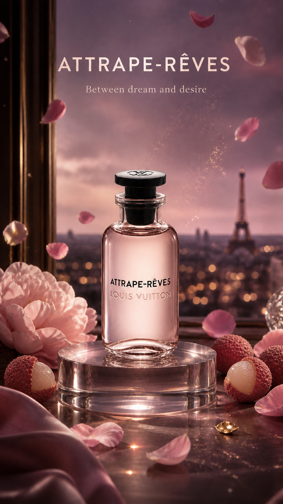
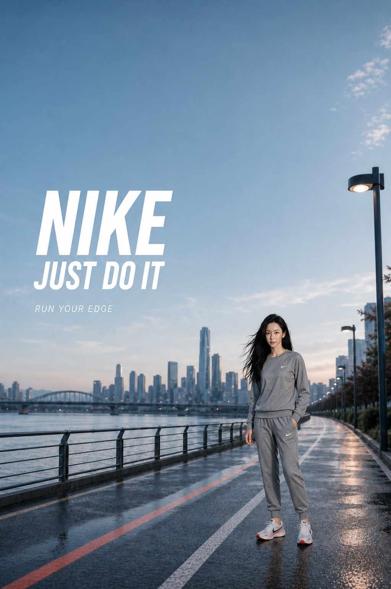
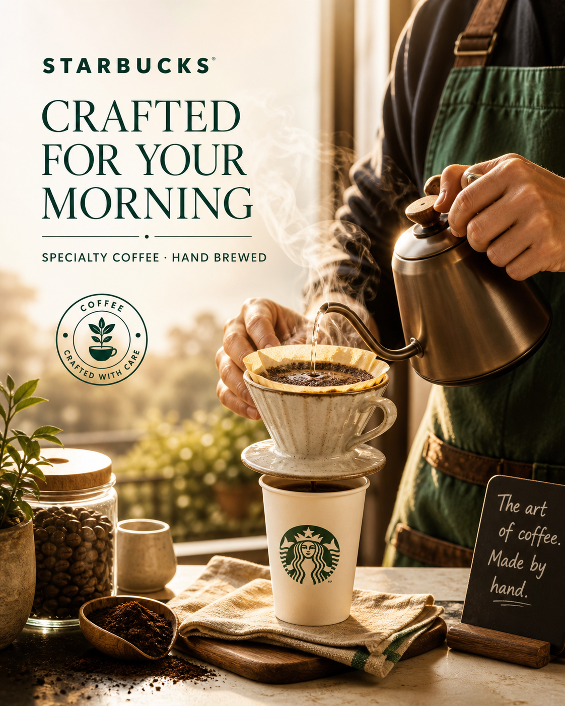

运营实习生
诺亚控股
- 参与海外基金集团及各项目组 Outlook 邮件处理流程的梳理，协助明确邮件接收、分类、分发与归档环节。
- 深度参与 AI 邮件智能归集与分发网站的业务优化，协助定义需要回复、待跟进和可直接归档的邮件类型。
- 基于实际使用反馈参与网站功能迭代、流程验证与问题测试，推动系统更贴合项目组工作需求。
Video Content / AIGC / Marketing
面向市场营销、后期剪辑、TVC 编导与文案策划的复合型视频内容创作者。
戏剧影视导演专业出身，具备画面构图、色彩、节奏与叙事逻辑的判断力；熟悉 AIGC 工具，能够把创意、制作和数据反馈连接成可落地的传播内容。
About
本科就读南京传媒学院戏剧影视导演专业，GPA 3.5/4.0，专业排名前 10%；研究生阶段就读香港浸会大学传播学。具备视频策划、剪辑、后期制作、内容运营与 AI 产品思维。
Experience
诺亚控股
江西广而易科技
南昌李唐教育
AI Product / Game Operations
AI 产品 / 游戏社区运营
我的角色：项目策划与产品设计
面向游戏社区、内容与活动运营人员，将玩家反馈整理、问题判断与运营动作生成整合为一套浏览器端工作流。项目基于米游社公开反馈场景设计，重点解决信息分散、人工分类耗时以及 AI 输出缺少审核边界的问题。
支持 CSV 导入、规则分析、反馈队列导出与 JSON 报告生成，覆盖从数据整理到运营复盘的基础闭环。
将分散的玩家反馈转化为可检索、可排序、可复核的运营信息，帮助运营人员更快识别高优先级问题，并据此推进客服响应、内容解释与活动优化。项目保留人工确认节点，让 AI 负责提效而不替代官方判断。
Selected Video Work
Selected Visuals



Skills
Player Profile
长期体验竞技、开放世界、二次元 RPG、经营模拟与 FPS 等品类，能够从玩家视角观察游戏循环、内容节奏、养成系统、社交协作与长期留存。
Steam 游戏库 80+ 款
累计游玩约 1000 小时
约 1000 小时
最高段位：王者 · 常用位置：游走
熟悉英雄定位、阵容协作、资源运营、版本变化与团队沟通。
约 600 小时
主线最新 · 收集 / 探索完成度 82%
关注审美表达、探索反馈、服装收集与长期内容驱动。
约 900 小时
冒险等阶 60 · 深渊 12 层满星
理解角色养成、元素战斗、地图探索、活动节奏与长线运营。
约 300 小时
均衡等级 70 · 模拟宇宙 / 混沌回忆满星
体验队伍构筑、数值成长、角色叙事与版本内容循环。
约 50 小时
主线与 DLC 内容已通关
关注资源循环、经营反馈、任务节奏与轻量化叙事。
约 80 小时
已完成姜岛内容
体验农场经营、自由探索、角色关系与玩家自主目标。
约 100 小时
竞技等级：A-
理解地图信息、枪械反馈、团队协作与经济系统。